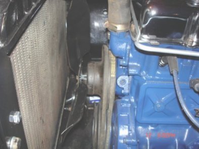

The following describes
the installation of a 300 Ford six into my 1959 F100
 Since I wanted to continue driving my truck as long
as possible,
and did not want a lot of down time, I had to do a lot of measuring
beforehand. With the old 223
in place it was quite difficult
getting accurate dimensions. I also wanted to use the stock front frame
perches, which meant
I needed to make front mounts for my 300.
Finally I was ready with my measurements and a plan.
I decided to use 3/16" thick iron for the mounts, and then use a cross tie to
reinforce them... Like
this...I am quite sure you could use 1/4 " iron, and not have to use a cross tie. Mount
pattern
Since I wanted to continue driving my truck as long
as possible,
and did not want a lot of down time, I had to do a lot of measuring
beforehand. With the old 223
in place it was quite difficult
getting accurate dimensions. I also wanted to use the stock front frame
perches, which meant
I needed to make front mounts for my 300.
Finally I was ready with my measurements and a plan.
I decided to use 3/16" thick iron for the mounts, and then use a cross tie to
reinforce them... Like
this...I am quite sure you could use 1/4 " iron, and not have to use a cross tie. Mount
pattern

The 300 is approx. 2 inches longer than the 223 therefore
I was concerned about having enough clearance between the
radiator and the water pump so
I kept the engine back as far as I could.
As it turned out, I had plenty of clearance.. I was able to use
the stock fan/waterpump setup, and still had 2 inches to spare
( See picture... ). The mount patterns
included in these pages have been modified to move the engine forward 1/2 " from my original plans.
....Allows for a little more clearance at the firewall.
 On the subject of radiators, I used the radiator from my donor
vehicle
(1978 F150), that way my transmission cooler lines simply had to be reconnected without any mod necessary. I did have
to add a 2" X 18" X 1/8" piece to the sides of the '78 radiator for the mounting, but it was simple enough.
On the subject of radiators, I used the radiator from my donor
vehicle
(1978 F150), that way my transmission cooler lines simply had to be reconnected without any mod necessary. I did have
to add a 2" X 18" X 1/8" piece to the sides of the '78 radiator for the mounting, but it was simple enough.
Back
Next Page